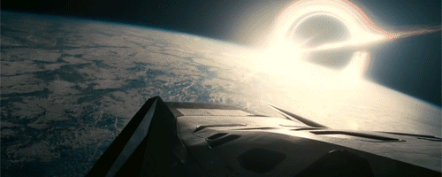

Bueno, ya hable sobre mis gustos, ahora les hare una lista de cada apartado sobre lo que considero lo mejor de cada uno de ellos
Juegos que tienes que jugar si oh si una vez en tu vida
- Halo (toda la saga)
"Todos fallamos. Todos cometemos errores. Es lo que nos hace humanos."
Esto no es solo la historia de una guerra. Es el eco de milenios, un himno a la supervivencia de la humanidad grabado a fuego en las estrellas. Es la crónica de cómo, al borde de la extinción total, encontramos a nuestro mayor héroe, forjamos a nuestros peores demonios y descubrimos que el universo es mucho más antiguo, vasto y aterrador de lo que jamás imaginamos. Esta es la saga de Halo.
Todo comienza con un susurro, una verdad ineludible: no estamos solos. Cuando la humanidad se expandió por la galaxia, se topó con el Covenant, un imperio teocrático fanático, una coalición de razas alienígenas unidas por la creencia de que una antigua y misteriosa raza, los Forerunners, les había prometido un "Gran Viaje" hacia la divinidad. Para ellos, la humanidad no era más que una herejía, una plaga que debía ser purgada del cosmos con fuego sagrado.
el Jefe Maestro, John-117. Un gigante de armadura verde, un espectro de guerra silencioso, la última y mejor defensa de la humanidad.
Junto a su única y verdadera aliada, la brillante e inquebrantable inteligencia artificial Cortana, el Jefe Maestro no solo luchó contra el Covenant; se topó con sus secretos más profundos y oscuros. Descubrió los anillos Halo, megaestructuras de una belleza imposible y un propósito terrorífico: no eran armas de salvación, sino de aniquilación total, diseñadas para erradicar a un parásito cósmico de pesadilla conocido como el Flood, una plaga que consume y corrompe toda vida pensante.
La saga de Halo es una odisea a través de una galaxia en llamas. Es el estruendo de un Warthog derrapando en un campo de batalla alienígena, el zumbido de una Espada de Energía, la explosión catártica de una granada de plasma bien colocada. Es la majestuosidad de sus coros gregorianos y orquestas épicas que anuncian tanto la llegada de la esperanza como la inminencia del apocalipsis.
Desde la desesperada defensa de Reach hasta los misterios de los mundos escudo y los confines del espacio conocido, Halo es la historia definitiva de la lucha de la humanidad contra la aniquilación. Es un testamento a la idea de que incluso cuando toda la galaxia quiere verte arder, un solo soldado puede ser la chispa que reavive la llama de la esperanza y se levante para terminar la lucha.

- Persona 3 Reload
"El tiempo nunca espera. Entrega todo por igual con el mismo fin. Vosotros, que queréis salvaguardar el futuro, por limitado que sea... Se te dará un año; sal sin vacilar, con tu corazón como guía..."
Prepárate para que un disparo resuene en tu cabeza y despierte algo que yace dormido en tu alma. Persona 3 Reload no es un simple videojuego; es un pacto de sangre con la vida misma, un viaje elegante, melancólico y brutalmente honesto hacia la pregunta más importante: ¿Qué harías si cada día te acercara un paso más a un final ineludible?
Para luchar, no usarás una espada, sino un Evocador. Apuntarás un arma a tu propia cabeza y jalarás el gatillo, no para morir, sino para liberar a tu Persona, la manifestación de tu poder interior. Cada batalla en la laberíntica y siempre cambiante torre del Tártaro es un deslumbrante espectáculo de estrategia y estilo, ahora reimaginado con una fluidez y un dinamismo que te dejarán sin aliento.
Persona 3 Reload es una obra maestra de contrastes. Es la calidez de un día de verano con amigos chocando violentamente contra el terror existencial de la noche. Es una banda sonora icónica que fusiona el J-Pop, el rock y el jazz para crear el ritmo de tu doble vida. Es una historia que te hará reír a carcajadas un momento y te dejará con un nudo en la garganta al siguiente, explorando temas de depresión, pérdida y el valor que se necesita para enfrentar la mortalidad de frente.
- Red Dead Redemption II
"But I tried. In the end, I did"
OLVÍDATE DE LOS CUENTOS VAQUEROS Y LAS PUESTAS DE SOL. ESTO ES EL LODO, LA SANGRE Y EL HIELO EN LOS HUESOS. Esto es el réquiem por un mundo podrido, contado desde las entrañas de la bestia. Red Dead Redemption 2 no te pone en las botas de un héroe; te encadena al alma de un hombre condenado en una era que se muere a balazos.
Aquí eres Arthur Morgan. No eres el líder, eres el martillo. Eres el cobrador, el matón, el bastardo más leal y eficiente de la banda de Dutch van der Linde, una familia de parias que persigue un sueño imposible: la libertad en una América que ya los ha marcado para morir. Vives y respiras por un código de honor que se desmorona con cada atraco fallido y cada nueva mentira de tu carismático líder.
Pero la verdadera guerra no es contra los Pinkerton ni contra las bandas rivales. La guerra es interna. Verás cómo la lealtad se pudre y se convierte en veneno. Verás a Dutch van der Linde, tu mentor, tu figura paterna, transformarse de un visionario carismático en un paranoico patético que arrastra a todos los que lo aman al puto abismo. Sentirás la traición como un cuchillo helado entre las costillas.
Y mientras el mundo y tu familia se hacen pedazos, la muerte empieza a crecer dentro de ti. No es una bala, es una puta tos que te roba el aliento, una sentencia final que te obliga a mirar el reflejo del monstruo en el que te has convertido. Y es en esa cuenta regresiva, con los pulmones llenos de sangre y el alma llena de fantasmas, donde te harás la única pregunta que importa: en un mundo sin honor, ¿puede un mal hombre hacer una última cosa bien hecha?

Las peliculas mas cabronsisimas que eh visto
- Godzilla Minus One
"Era como un dinosaurio prehistórico convertido en monstruo. Los habitantes locales lo llamaron Godzilla."
OLVÍDATE DEL REY DE LOS MONSTRUOS Y DE LAS VERSIONES AMABLES. ESTO ES UNA PELÍCULA DE TERROR BÉLICO. Es la historia de lo que sucede cuando un país ya está de rodillas, en cero absoluto, y el destino decide que todavía se puede caer más bajo, hasta menos uno.
Japón, 1945. La nación es un cementerio humeante, una herida abierta y humillada por la derrota. No hay gobierno, no hay ejército, no hay esperanza. Y es en ese instante de máxima fragilidad que el océano desata una abominación. Este Godzilla no es un animal; es un dios vengativo, una pesadilla atómica con patas. Es el trauma de la guerra y la radiación hecho carne, y ha venido a castigar a los supervivientes por el simple hecho de seguir respirando.
Godzilla Minus One es una obra maestra brutal. Te sujeta con fuerza y no te suelta, te sumerge en el terror para luego mostrarte la belleza indomable del espíritu humano. No es una película sobre cómo la humanidad mata a un monstruo. Es la historia cruda y conmovedora de cómo un hombre, y una nación, aprenden a sobrevivir a sus propios fantasmas para poder, por fin, empezar a vivir.

- Rebuild Of Evangelion 3.0 + 1.0
"Porque te Queremos Shinji"
OLVÍDATE DE TODO. ESTO NO ES UN FINAL; ES UN PUTO EXORCISMO. Es la sesión de terapia más violenta, hermosa y demencial que verás en tu vida, vomitada directamente sobre el celuloide. Evangelion: 3.0+1.0 no es una película que ves; es una experiencia que te desmantela átomo por átomo y luego decide si vale la pena volverte a armar.
Aquí no hay héroes, solo supervivientes arrastrando los pedazos de su alma en un mundo teñido de un rojo imposible, un paisaje de pesadilla que grita el fracaso de la humanidad. El Cuarto Impacto dejó un lienzo de aniquilación y los pilotos, más rotos y jodidos que nunca, deambulan sin propósito. Verás a un Shinji Ikari reducido a una cáscara vacía, un espectro catatónico ahogado en una culpa tan profunda que colapsaría a un dios. Y lo verás, lentamente, dolorosamente, ser arrastrado de vuelta a la realidad no por discursos de esperanza, sino por la cruda y simple necesidad de existir.
Esto no es una historia sobre salvar al mundo con robots gigantes. Es sobre un hombre aprendiendo, después de 25 años, a decir "adiós" a sus personajes. Es sobre encontrar la belleza en un mundo imperfecto, sobre elegir la dolorosa realidad en lugar del cómodo escape del "Proyecto de Instrumentalización Humana". Es sobre crecer, aceptar tus cicatrices y, por primera vez, atreverte a ser feliz.

- Interestelar
"La única manera en que los humanos pueden llegar a alguna parte es dejando algo atrás"
Esto no es solo un viaje a las estrellas; es un viaje al corazón mismo de lo que nos hace humanos. Es una odisea monumental y profundamente íntima sobre la promesa de un padre a su hija, una promesa que desafiará las leyes del tiempo, el espacio y la propia realidad.
La Tierra se está muriendo. No con una explosión, sino con un susurro ahogado por el polvo. La humanidad se ha convertido en una especie de granjeros que mira hacia el suelo, olvidando que nuestro destino siempre estuvo en las estrellas. La supervivencia ya no es una opción aquí; la única esperanza es un éxodo, una huida desesperada hacia lo desconocido.
Pero el verdadero viaje es el del tiempo y el amor. Mientras Cooper y su tripulación luchan contra los peligros de lo desconocido, cada decisión, cada minuto perdido, se convierte en décadas robadas a sus seres queridos. La película explora con una precisión devastadora cómo el amor no es solo un sentimiento, sino quizás la única fuerza en el universo capaz de trascender las dimensiones, una conexión que ni la distancia ni el tiempo pueden romper
